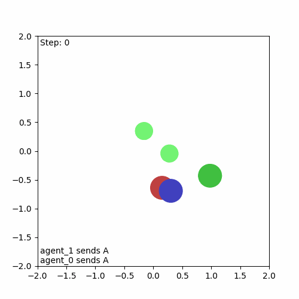
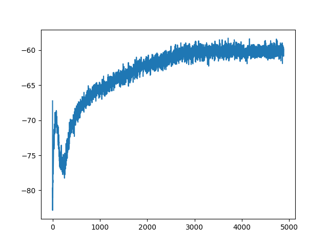
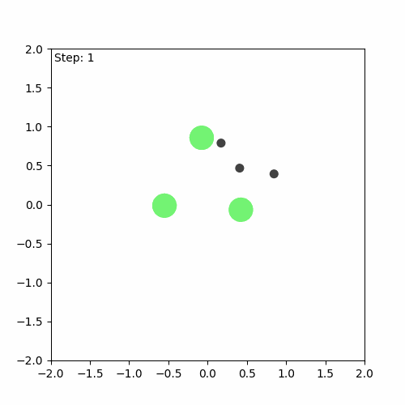
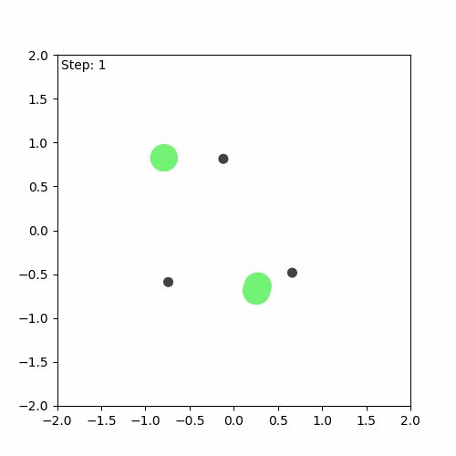

Testing JaxMARL, a cutting-edge library for multi-agent reinforcement learning, built on the high-performance JAX framework for efficient parallel computation.
In this blog post, I’ll share my experience getting started with JaxMARL, a new library presented in NeurIPS 2024. It is designed for multi-agent reinforcement learning using JAX. JaxMARL promises ‘ease-of-use with GPU-enabled efficiency’ with support of a wide range of commonly used MARL environments like Multi-Agent Particle Environment (MPE) and some baseline algorithms.
I’ll walk you through how I installed JaxMARL, dealt with some installation hiccups, and got everything running smoothly. By the end, I’ll check one of the baseline algorithms from the library to familiarise myself with it and see how it performs.
The easiest way to install a new Python library is often to create a fresh environment and use Python’s package manager, pip. So naturally, the first thing I did was run pip install jaxmarl.
Everything seemed to install smoothly. But when I tried import jaxmarl I got the following error:
AttributeError: 'Config' object has no attribute 'define_bool_state'
This turned out to be a version mismatch between jax, flax, and jaxMARL. Despite my best efforts to manually match the library versions, I couldn’t get it to work. After checking the Github issues page, I realized I wasn’t alone; others had faced the same issue. The suggested fix? Use the Dockerfile provided in the repository.
Following the JaxMARL installation guide, I cloned the repository and set up the Docker container with these commands:
git clone git@github.com:FLAIROx/JaxMARL.git
cd JaxMARL
make build
make run
Once everything was set up, it was time to test if everything was working as expected. Since I’m interested in using MPE environments, I ran the script mpe_introduction.py from /jaxmarl/tutorials.
This script runs the 'MPE_simple_reference_v3' environment from the MPE suite, randomly selecting actions for each player. In order to save the resulting animation as a GIF, I updated the last part of the script like this:
# Original line:
# viz.animate(view=True)
# Modified code to save the animation
import matplotlib.animation as animation
import matplotlib.pyplot as plt
ani = animation.FuncAnimation(
viz.fig,
viz.update,
frames = len(viz.state_seq),
blit = False,
interval = viz.interval,
)
ani.save('animation.gif', writer='pillow', fps=30)
And here’s the resulting animation, confirming that everything is working as intended:

The library offers some baseline algorithms already implemented on several of its environments. Again, since I am particularly interested in the environments from MPE, I tried Independent Proximal Policy Optimisation (IPPO) on the simple reference environment from MPE. The implementation provided by JaxMARL is pretty fast, and when run, it generates a nice plot of the average returns of the players after each game, demonstrating that the algorithm is learning.

However, I didn’t want to just see a plot; I wanted to observe how the algorithm’s behaviour evolved throughout the training. To achieve this, I needed to extract the information of the games played by the algorithm, which turned out to be no easy feat. The first thing to understand is that implementation uses jax.vmap to parallelise several environements and random seeds, and jax.lax.scan to efficiently loop through each game played and iteration of the algorithm. These functions can return data collected during the runs, but the data is returned in a stacked form. Therefore, I not only had to extract the environment states but also unstack after the training was finished.
After doing all this, I encountered some small bugs that I initially thought were my own fault. After some debugging, I realised that I haven’t introduced any bug-the bugs were there all along! So, I reported them to the Github issues page of JaxMARL. While I don’t think the bugs significantly impacted the algorithm’s training, they did interfere with the visualisations I wanted to create. After dealing with these bugs, I was able to create a visualisation of both the first game played during training and the last one.


We can see that the algorithm has indeed learnt something, but it is still far from perfect. The aim of the game is for the agents (green) to learn to cover all the landmarks (black) while avoiding collisions. In this case, one of the agents runs away, while the others attempt to cover (stay as close as possible to) the three landmarks on their own.
After using and familiarising myself with JaxMARL, I believe it holds significant promise, although it still feels somewhat rough in the edges. The library’s ease of use and GPU-enabled efficiency are notable strengths, but there is room for further refinement. Despite these limitations, I plan to incorporate JaxMARL into a future project involving coevolutionary algorithms, which I’ll be showcasing on this blog. I hope to see the library evolve further in the coming updates and I will keep reporting any pesky bugs that I encounter.